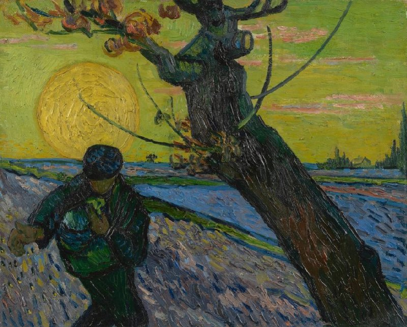

Famosa pintura de Vincent van Gogh, criada em 1890. Esta obra é notável por suas cores vibrantes e pela representação delicada das flores de amendoeira. Van Gogh pintou esta peça como um presente para seu sobrinho, que estava nascendo na época, e a obra reflete a esperança e a renovação associadas à chegada de uma nova vida.
Por: João Vinícius
Ler mais

Uma das obras menos conhecidas de Vincent van Gogh, pintada em 1889 durante sua estada no asilo de Saint-Paul-de-Mausole, em Saint-Rémy-de-Provence. Este período da vida de Van Gogh foi marcado por intensa criatividade e produção prolífica, apesar de suas lutas pessoais.
Por: João Vinícius
Ler mais

Em "O Semeador", Van Gogh retrata uma figura solitária semeando sementes em um campo sob um céu dramático e rodopiante. A pintura reflete o fascínio de Van Gogh pelos ciclos da natureza e pelos temas do trabalho e da vida. O semeador, representado em cores ousadas e vibrantes, destaca-se contra os tons dourados do campo, característicos da pincelada e da paleta de cores distintas de Van Gogh. O céu de fundo, com seus padrões dinâmicos e rodopiantes, acrescenta uma sensação de movimento e energia à composição.
Por: João Vinícius
Ler mais